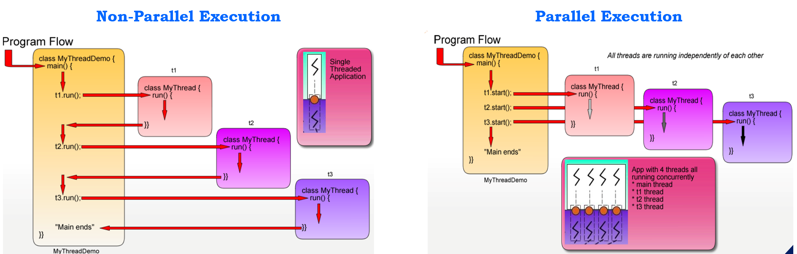

1. Thread vs. Process
Qs: what is thread ? what is process? what’s the difference between them?
Both processes and threads are independent sequences of execution. The typical difference is that threads (of the same process) run in a shared memory space, while process run in separate memory spaces. More specifically,
- A Process can be thought of as an instance of a program in execution. It runs independelty and isolated of other processes. It cannot directly access variables and data structures of other processes. If you wish to access another process’ resource, Inter-process communication(IPC) has to be used such as pipes, files, sockets etc.
- A Thread is aslo called Lightweight Process. It has its own call stack, but can access shared data of other threads in the same process. When one thread modifies a process resource, the change is immediately visible to sibling threads. And every thread has its own memory cache - Thread Local Storage.
- A Java application runs by default in One Process.
Qs: what’s the difference between Mutliprocessing and Multithreading?
Both Multiprocessing and Multithreading are used to increase the computing power of a system.
For Multiprocessing,
- Multiprocessing is a system that has more than one or two processors.
- CPUs are added for increasing computing speed of the system.
- Multiple processes are executing concurrently.
- Creation of a process is time-consuming and resource intensive.
- It can be divided into two types, symmetric and asymmetirc.
For Multithreading,
- Multithreading creates multiple threads of a single process ot increase computing power.
- Myltiple thread of a single process are exected concurrently.
- Creation of a thread is economical in both sense time and resource.
Example,
- Considering Chrome, it uses multiprocessing instead of multithreading. That is, each tab in the browser is a process. The reason of using multiprocessing rather than multithreading in the brower is that making the browser more crash resistant.
The problem with threads is that if you try to access memory you shouldn’t or something, it’s not just that thread which will end, it’s the whole process, along with all the other threads managing all your tabs.
If using the multipleprocessing model and it means that you can crash one tab, but generally the rest won’t crash with it, because they’re in isolated processes. - Considering Controller, we can do Multithreading in SpringBoot, and both Multitheading and Multiprocessing in PHP.
- Considering Database, PostgreSQL supports Multiprocessing and MySql supports multithreading.
2. How to create a Java thread?
There are two basic ways to do this,
- Extending the Thread class
- Implementing the Runnable class
(1). Creating a thread via extending the Thread class
We can create a thread through extending the Thread class as follows.
class MyThread extends Thread {
public MyThread() {}
@Override
public void run() {
for (int i = 0; i < 200; i++)
System.out.println(i + " ");
}
}Then we can do non-parallel execution (using method run()) or parallel execution (using method start()).
class MyThreadTestDrive {
public static void main(String[] args) {
MyThread thread1 = new MyThread();
MyThread thread2 = new MyThread();
MyThread thread2 = new MyThread();
System.out.println("======Non-parallel execution======");
thread1.run();
thread2.run();
thread3.run();
System.out.println();
System.out.println("======Non-parallel execution======");
thread1.start();
thread2.start();
thread3.start();
}
}The difference between parallel and non-parallel excution is shown as follows.
(2). Creating a thread via implementing the Runnable interface
This may be desired if you want your thread to extend another class.
public class MyThread implements Runnable {
@Override
public void run() {
System.out.println("A new thread has been created.");
}
}Classes that implement Runnable are instantiate in a different way, i.e.
class MyThreadTestDrive {
public static void main(String[] args) {
Thread thread = new Thread(new MyThread());
thread.start();
}
}3. Advanced Ways to Create Thread
Next, two advanced ways to create thread will be introduced. They are,
- Using class
ExecutorService - Using class
CompletableFuture
(1). Creating a thread Using ExecutorService
ExecutorService is a framework provided by the JDK which automatically provides a pool of threads and API for assigning tasks to it.
Instantiating ExecutorService can be done by using Factory Method of class Executors. This is the simplest method. For example,
ExecutorService executor2 = Executors.newSingleThreadPool();
ExecutorService executor = Executors.newFixedThreadPool(10);Because ExecutorService is an interface, an instance of any its implementations can be used. There are several implementations to choose from in the java.util.concurrent package or you can create your own. For example,
ExecutorService executor2 = new ThreadPoolExecutor(1, 1, 0L,
TimeUnit.MILLISECONDS,
new LinkedBlockingDeque<Runnable>());Then, the next step is to assign tasks to the ExecutorService. ExecutorService can execute both Runnable and Callable tasks. Let’s create some tasks at first.
// Runnable object is created using lambda expression
Runnable runnable = () -> {
try {
TimeUnit.MILLISECONDS.sleep(200);
} catch (InterruptedException e) {
e.printStackTrace();
}
};
Callable<String> callable = () -> {
TimeUnit.MILLISECOND.sleep(200);
return "Task's execution";
};
List<Callable<String>> callables = new ArrayList<>();
callables.add(callable);
callables.add(callable);
callables.add(callable);Tasks can be assigned to the ExecutorService using several methods, including execute(), submit(), invokeAll(), invokeAny().
The execute() method is void and it doesn’t give any possibility to get the result of task’s execution or to check the task’s status (is it running or executed). It accepts runnable tasks.
executor.execute(runnable);The submit() method submits a Callable or a Runnable task to an ExecutorService and returns a result of type Future.
executor.submit(callable);The invokeAll() method assigns a collection of tasks to an ExecutorService, causing each to be executed, and returns the result of all task executions in the form of a list of objects of type Future.
try {
List<Future<String>> futures = executor.invokeAll(callables);
} catch (InterruptedException e) {
e.printStackTrace();
}Tip 1: Difference between Callable and Runnable objects.
- They are similar, and are both designed for classes whose instances are potentially executed by another thread.
- A Callable needs to implement
call()method while a Runnable needs to implementrun()method. - A Runnable object doesn’t return a result whereas a Callable object returns a result of type
Future. - A Runnable object cannot throw a checked exception. The Callable object can throw an exception.
For example,
public class MyCallable implements Callable {
@Override
public Object call() throws Exception {
return null;
}
}
public class MyRunnable implements Runnable {
@Override
public void run() {
}
}Tip 2: Future object.
Java Callable tasks return java.util.concurrent.Future object. Uing Java Future object, we can find out the status of the Callable task and get the returned Object. Methods are provided to check if the asynchronous computation is complete, to wait for its completion, and to retrieve the result of the compuration.
get(): Waits if necessary for the computation to complete, and then retrieves its result.isCancel(): Returns true if this task was cancelled before it completed normally.isDone(): Returns true if this task completed.
Tip 3: CountDownLatch object.
documentIt provides a synchronization aid that allows one or more threads to wait until a set of operations being performed in other threads completes.
A CountDownLatch is initialized with a given count. The await() mehtods block until the current count reaches zero due to invocations of the countDown() method, after which all waiting threads are released and any subsequent invocations of await() return immediately. This is a one-shot phenomenon – the count cannot be reset.
A CountDownLatch is a versatile synchronization tool and can be used for a number of purposes. A CountDownLatch initialized with a count of one serves as a simple on/off latch, or gate: all threads invoking await wait at the gate until it is opened by a thread invoking countDown(). A CountDownLatch initialized to N can be used to make one thread wait until N threads have completed some action, or some action has been completed N times.